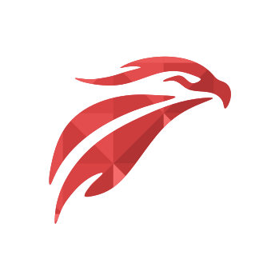
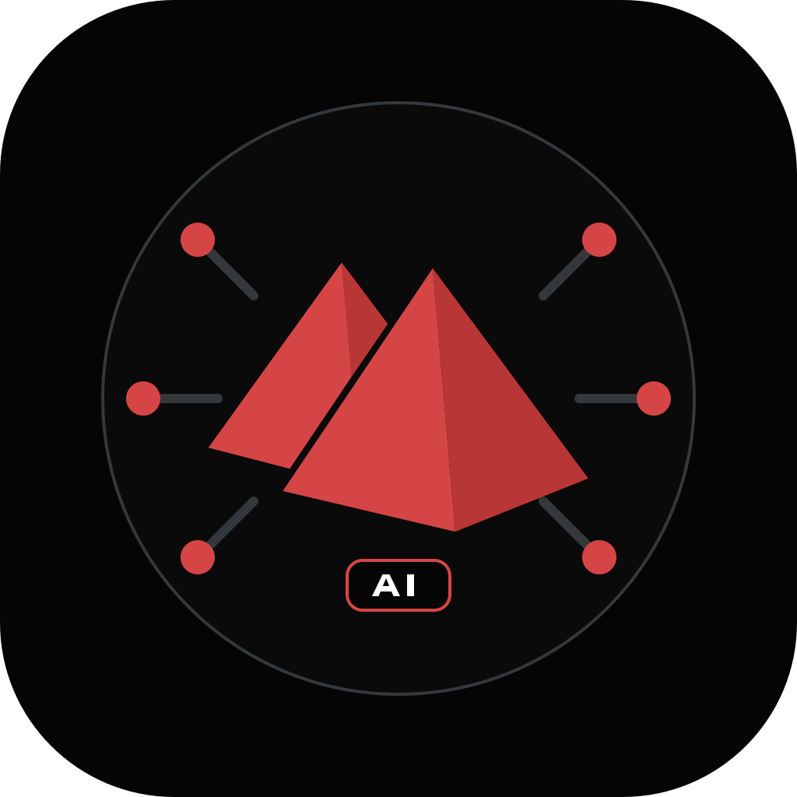
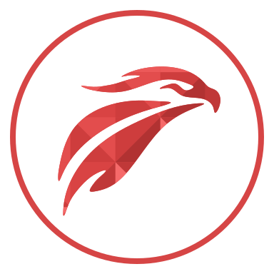
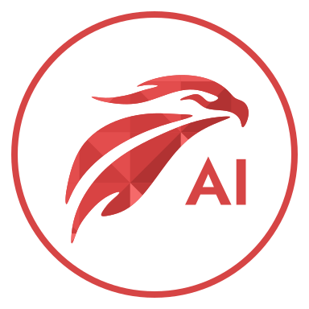

Эталон
Три формы, 24 крупные грани, прозрачный фон.
ФИРМЕННЫЙ ЛОГОТИП · БРЕНДБУК
Фирменный логотип ИИ-аккаунта MOKO AI. Знак построен на образе сокола Гора, фирменном красном цвете и геометрической системе MOKO.


Три формы, 24 крупные грани, прозрачный фон.

Утверждённая производная версия без подписи.

AI в контурах Jost SemiBold, масштаб 180%.
24–63 px: компактный силуэт. От 64 px: полная композиция с 24 гранями и подписью AI.
#f56a6a#ec5959#e34d4d#d94343#d64545#ce3d3d#c03838#b13232